Обзор нескольких навигационных программ

Лучший подарок начинающему автомобилисту — не чехольчики на сидения, не огнетушитель и не аромаелочка. Лучший подарок начинающему автомобилисту, конечно же, GPS-навигатор. Поскольку знание родного города у каждого человека обычно ограничивается домашним районом, метро и трамвайными путями пары маршрутов, одиночество за рулем обычно вызывает панику и приступ топографического кретинизма.
Редакции Mobi очень часто задают вопросы о выборе навигатора. И объективно ответить обычно очень трудно. Аппаратная часть у большинства автонавигаторов одна, различается лишь софт. Но на какой программе остановить выбор? Кому-то нравится американский TomTom, а кто-то бьется за честь российского производителя в лице «Автоспутника». И у каждого свои доводы, тут не возразишь. На самом деле любовь к той или иной программе отчасти объясняется вкусом в дизайне и эргономике, а также требовательностью к функционалу и умением терпеть неудобства. В конце концов, самую главную функцию — доставить из точки А в точку Б — выполняют все-все навигаторы. Дальше начинается вкусовщина и специализация. Чтобы избавить потенциального покупателя от необходимости идти в магазин и проводить там добрый час с разными девайсами в поисках идеального варианта, мы и написали этот материал, в котором расскажем о самых актуальных навигационных программах этого года. После прочтения этого сравнения вы с большой вероятностью сможете решить для себя, на чем же остановиться.
МУКИ ВЫБОРАЕсли быть честным, автор этой статьи выбирал навигатор для себя любимого, так и возникла идея сравнения. Поэтому каждая программа тестировалась с особым рвением и цинизмом: одно дело советовать, совсем другое — мучиться самому, особенно когда не любишь идти на компромисс.
Немного о методике тестирования. Трудно оценивать интерфейсы, когда за жизнь перевидал их тысячи. Гораздо важней услышать мнение неподготовленного человека, который с компьютерами и навигаторами на «будьте любезны». Проще говоря, каждый навигатор был подвергнут тесту «блондинкой», которая не понимает во всех этих «кнопочках-надписях» ровным счетом ничего. Если подопытная «блондинка» после пятиминутных объяснений уверенно начинала и продолжала пользоваться программой, тест считался пройденным.
Предварительный отбор прошли программы TomTom, «Автоспутник», «Навител Навигатор», iGo и Sygic Drive. TomTom уже получал от нас награды и многими источниками признан лучшим навигационным ПО. «Навител Навигатор» пользуется большой популярностью в России и славится самыми точными картами России. Отечественный «Автоспутник» активно набирает обороты и уже получил много положительных отзывов, как главный конкурент «Навитела». IGO был самой популярной программой в 2007–2008 годах, но сейчас начал резко сдавать под напором молодых конкурентов. А Sygic Drive появился у нас недавно в версиях для коммуникаторов и смартфонов и еще не успел получить распространения.
TomTomГлавная особенность ПО от TomTom в том, что эта программа поставляется исключительно вместе с железом. То есть TomTom — это не только программа, но и сам навигатор. Причем цена на такой тандем не ниже, а наоборот, гораздо выше, чем у конкурентов. TomTom делает самые дорогие навигаторы — и их цена полностью оправдана отличным железом и шикарным софтом.
Навигаторы TomTom пришли в Россию совсем недавно. В первых версиях программы для России названия улиц писались транслитом. В прошлом году эти навигаторы стали насквозь кириллическими — и интерфейс, и голосовые подсказки, и названия улиц. Карты для TomTom делает компания Tele Atlas, что для русского пользователя не есть хорошо. Tele Atlas нарисовала отличные точные карты маленькой уютной Европы и необъятной Америки. А вот для России — только крупные города и шоссе. Отъедите от главных шоссе в сторону на пяток километров — навигатор просто покажет пустую карту. Говорить о многочисленных маленьких населенных пунктах и смысла нет. Бабушкину деревню TomTom скорее всего не найдет.
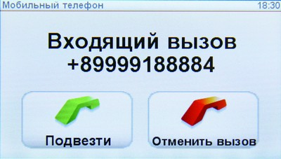 |
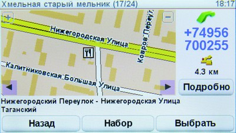 |
;){kind=link}
;){kind=link}
Впрочем, низкая детальность карт TomTom отчасти компенсируется пользователями. У компании есть онлайн-сервис, через который водители сообщают об изменениях в пути — будь то новые дороги, дома, даже населенные пункты. После проверки эти изменения становятся доступны всем — так навигатор можно обновлять каждую неделю. Не скажем за другие города, но в тех же Москве или Питере владелец навигатора TomTom всегда будет в курсе всех дорожных работ — настолько быстро работают водители и служба проверки.
ИнтерфейсИнтерфейс любой программы ничуть не менее важен, чем ее функциональность. Маразматичное корявое меню может отпугнуть покупателя, даже если за толстым слоем резких шрифтов и китайских иконок скрывается шедевр. К счастью, TomTom — американцы, а уж они-то знают в интерфейсах толк. Не осведомлены, трудились ли над созданием ПО TomTom психологи или профессионалы из других областей, но с точки зрения взаимодействия с пользователем программа просто шедевральна, вне конкуренции, бьет всех и вся… рукоплескать можно долго. Лучший показатель удобства — это когда человек, абсолютно незнакомый с навигаторами, начинает без особого труда и изучения мануалов пользоваться устройством. TomTom прошел проверку «блондинкой».
Начнем с того, что меню TomTom буквально «дышит» — небольшие красивые иконки, короткие, но абсолютно понятные подписи к ним. Если «куда», то на иконке дорога с зеленой линией. Если «подготовить маршрут», то классическая иллюстрация «из точки А в точку В». Все функции на поверхности, рыться в меню не придется. И главное — абсолютно понятно назначение каждого пункта.
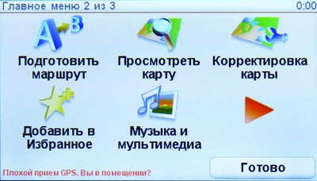 |
;){kind=link}
Во время езды на нижней панели показаны расстояние до ближайшего поворота, текущая скорость, ориентировочное время прибытия, название улицы, по которой вы едете и, при необходимости, индикация полос движения на многополосных шоссе.
Однако есть один недостаток у TomTom, который ему трудно простить. А именно — программа не знакома с таким актуальным для России явлением, как корпуса и строения. Допустим, знает навигатор улицу Квадрижопольскую, дом 5. А тому, что у этого дома еще 6 корпусов с дробями да добрый десяток строений, TomTom не обучен. В принципе, не самый страшный недостаток, если вы не собираетесь подъезжать на машине аккурат к входным дверям здания. Но вообще огорчает — ждем следующей версии TomTom, по нашим подсчетам появится она не раньше следующего года.
НавигацияВ США и Европе TomTom уже давно считается лидером среди навигационного ПО. Если не брать во внимание интерфейс, то критически важной составляющей навигатора являются карты. А уж они-то у TomTom не просто точные, но еще и всегда актуальные. Благодаря сервису MapShare, каждый владелец навигатора TomTom может вносить изменения в карту — будь то введение одностороннего движения, появления светофора, запрет поворота или прокладка новых улиц. Для крупных городов это очень важно — в той же Москве крупные развязки ремонтируются постоянно, на это время многие съезды закрываются. Навигатор об этом не знал? Обновите его карту через интернет. И там нет? Значит, вы первый сможете внести изменения и, после проверки комиссией TomTom (в очень короткий срок), поправка будет утверждена и разослана всем желающим обновиться. MapShare позволяет получать поправки сразу же, а не ждать по полгода, пока обновятся официальные карты. Поэтому точность карт TomTom будет превосходной, если не забывать обновлять ПО навигатора.
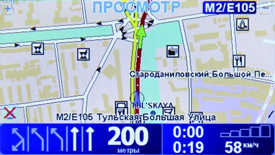 |
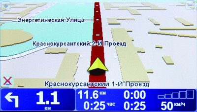 |
;){kind=link}
;){kind=link}
При планировании маршрута TomTom предварительно покажет его на двухмерной карте, рассчитав его длину и время в пути. Не понравился маршрут? Навигатор без проблем рассчитает альтернативный — автоматически, или учитывая ваши пожелания (избегать некоторых улиц, проехать через определенную точку). Автоматика работает так себе, а вот если руками указать несколько желаемых «чекпоинтов», навигатор запомнит ваш маршрут и будет предлагать его в будущем.
В целом для крупных городов TomTom просто идеален. Карты точные, интерфейс удобный, работает программа быстро. Но стоит выехать за МКАД — хватайтесь за атлас дорог России. Черт с ними, с деревушками — на картах TomTom нет, к примеру, улиц Курска, город просто показан отметкой посреди трассы М2.
Плюсы- Удобнейший интерфейс
- Быстрота работы
- Ручная корректировка карт
- Еженедельные обновления карт
- Почти нет карт «замкадья»
- Незнание корпусов и строений
- Порой строит не самые оптимальные маршруты
- Не пишет треки
- Для Москвы и Европы
Навител Навигатор
Под брендом «Навител» работает компания «Центр Навигационных Технологий» (ЦНТ) — истинно русские ребята с загадочной и неповторимой душой. Начнем с того, что программа «Навител Навигатор» использует свои собственные, созданные в ЦНТ карты. Пускай у «Навитела» нет точных карт Европы, зато ни один Tele Atlas не сравнится с ЦНТ точностью прорисовки СНГ.
Ввиду дешевизны и доступности «Навител Навигатор» установлен на подавляющем большинстве недорогих навигаторов второго эшелона. При желании можно купить и версию для коммуникатора — опять же, дешево. Недавно под брендом «Навител» в продажу поступили автонавигаторы, сделанные в Китае по ODM-контракту. Железки обычные, недорогие и ничем не примечательные — мы о них писали.
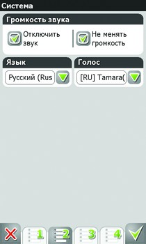 | 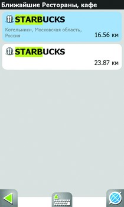 |
;){kind=link}
;){kind=link}
Точность карт «Навитела» в свое время похвалил сам Дизайнер Всея Руси Артемий Лебедев. Мы его мнение разделяем. И все бы ничего, да обновления карт ЦНТ выпускает раз в полгода. Для Москвы это очень критично — за полгода здесь успевает появиться уйма развязок, смениться множество знаков. Своего сервиса корректировки карт у «Навитела» нет, все немногочисленные замечания пользователи оставляют на форуме.
Однако есть у программы и серьезный козырь перед зарубежными аналогами — поддержка российских сервисов оповещения о дорожных пробках. У «Навитела» имеется собственный бесплатный сервис (познакомиться с ним можно в видеообзоре Digma DM430B, августовский номер или YouTube), а также поддержка SmiLink, ныне ставшего «Яндекс.Пробками». Для работы навигатор нужно соединить с мобильником через Bluetooth.
ИнтерфейсБольная тема. Русский интерфейс — бессмысленный и беспощадный. Хоть «Навител Навигатор» и похорошел за последние пару лет, в сравнении с любым зарубежным софтом он все еще кажется корявым и непонятным. Скоро, правда, ситуация изменится коренным образом — новый интерфейс «Навитела» сейчас разрабатывает «Студия Артемия Лебедева».
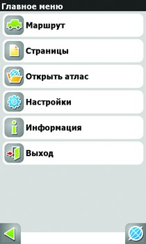 | 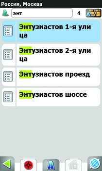 |
;){kind=link}
;){kind=link}
В первую очередь крайне неприятным оказалось меню — многоуровневое, с постоянными переходами в подразделы «Другое» и «Расширенное». Если в каком-то пункте скрывается много настроек, их разносят на несколько экранов, вкладки которых отображаются внизу. Звучит логично, на деле же не очень понятно. Хоть «Навител» делали в России и родным языком для программы является русский, назначение многих галочек и пунктов остается неясным — без мануала или классической «пол-литры» не разберешься. Неподготовленному человеку будет крайне трудно освоить «Навител Навигатор», зачастую помогает лишь метод научного тыка. Если ввести адрес «блондинка» еще осилит, то настроить показ карт или предупреждений — это уже к мужу/сыну.
Следующая неприятность — жутко захламленная карта. По умолчанию на ней отображается дикое (и это лишь часть от возможного) количество разных иконок и указателей. Все это мельтешит и отнюдь не помогает разобраться в местности. Но даже если отключить всю избыточную графику, карта все равно покажется чересчур «грязной» — плохая отрисовка с кучей ненужных линий и контуров.
НавигацияКаким бы дурным по натуре не был «Навител Навигатор», программе можно простить вообще все за уникальные по своей точности карты России. Пока американские и европейские навигаторы указывают на точку посреди пустой карты, сообщая, что где-то здесь притаился город федерального значения, «Навител Навигатор» демонстрирует знание множества мелких населенных пунктов, деревень и поселков городского типа. Если от незнания какого-нибудь Козлобородска TomTom лишь стыдливо краснеет, то «Навител» с радостью показывает улицы «городка и даже очертания домов. Если вы собираетесь в незнакомые дали по нашей необъятной, «Навител» просто необходим! Лучше карт от ЦНТ могут быть только военные атласы.
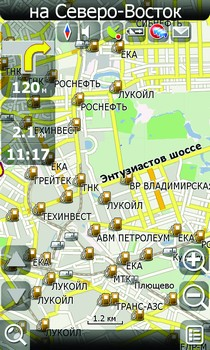 | 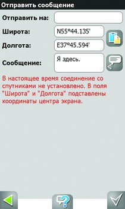 |
;){kind=link}
;){kind=link}
Но, несмотря на это, алгоритм прокладки маршрута у «Навител Навигатора» сомнителен — порой программа предлагает совсем никудышные маршруты, на которые знающий водитель никогда бы не решился. «Навител» зачастую поведет объездами, вместо того чтоб махнуть напрямик.
Недостаток карт ЦНТ — плохая база POI. Из ресторанчиков «Навител Навигатор» знает только старые, существующие не один год. А вот ближайший Starbucks (эта сеть в Москве действует достаточно давно) программа нашла аж за 16 километров, в Котельниках. На деле оба заведения были в пяти-семи километрах возле станций метро. Видимо, база POI обновляется гораздо реже, чем сами карты.
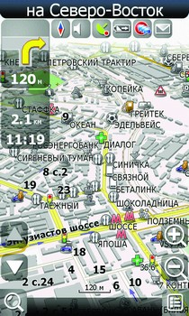 | 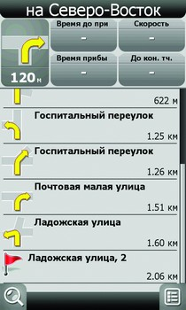 |
;){kind=link}
;){kind=link}
В «Навителе» есть одна очень интересная, но пока малополезная функция — отправка SMS с вашими текущими координатами. Это удобно в том случае, если все ваши знакомые пользуются навигаторами с Навителом и у всех он подключен к мобильнику. Тогда при получении такой SMS навигатор подцепит координаты и проложит к ним маршрут. В теории красиво и очень социально. На практике мало кто будет этим пользоваться.
Плюсы- Невероятно подробная карта СНГ
- Поддержка показа пробок
- Неприятный интерфейс
- Тормозная и грузная программа
- Несвежая база POI
- Для русской глубинки
Автоспутник
Тоже российский продукт. Когда-то «Автоспутник» был совсем хилой и малоизвестной программой, но в этом году софт быстро эволюционировал и набрал популярность. Обычно «Автоспутник» поставляется с картами Tele Atlas, но существуют и карты «Мегаполис», которые «славятся» своей жутчайшей неточностью. Так что если решитесь на «Автоспутник», обязательно уточняйте, чтоб в программе были надежные карты Tele Atlas, созданные педантичными европейцами. Своих изменений в карты создатели «Автоспутника» практически не вносят, лишь обновляют базу POI и роутинг. Поэтому по точности в крупных городах они сопоставимы с тем же TomTom — различия наблюдаются лишь в прокладке маршрутов.
Как и «Навител», «Автоспутник» информирует о пробках. Только использует для этого «Яндекс.Пробки» (не SmiLink). Ориентируясь на заторы, навигатор проложит маршрут, избегая проблемных мест. В отличие от большинства навигаторов с «Навителом», устройство с «Автоспутником» не нужно подключать к телефону — обычно в таких навигаторах есть слот для SIM-карты и вшитые настройки GPRS российских операторов.
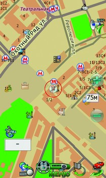 | 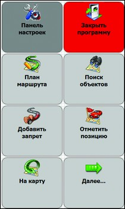 |
;){kind=link}
;){kind=link}
«Автоспутник» можно было бы считать ничем не примечательной программой, если бы не ряд интереснейших онлайн-сервисов. Во-первых, навигатор может отправлять пройденные треки на сервер, в ваш личный кабинет в системе «Автоспутник Online». Так ваши знакомые могут наблюдать за вашим перемещением во время длинных автомобильных путешествий. Во-вторых, навигатор может получать обновления карт и POI из интернета, если таковые будут доступны.
ИнтерфейсЕсли интерфейс «Навител Навигатора» просто неказист и неудобен, то в таком случае «Автоспутник» — полная катастрофа. Меню программы очень некрасивое, малопонятное, с жуткими иконками. Чересчур много пунктов, в них можно запутаться, а отыскать нужное (особенно если не знаешь, где что находится) почти невозможно. Что творится на экране во время езды — неописуемо. Ярлычки экранного меню находятся в самых неожиданных местах и нарисованы так аляповато, что неясно, то ли это кнопки, то ли обозначение POI на карте. Попробуйте угадать, куда ведут кнопки с иконками «машина и стрелка», «приборная панель» и «финишный флаг с круговой стрелкой». Непонятно? В этом весь «Автоспутник».
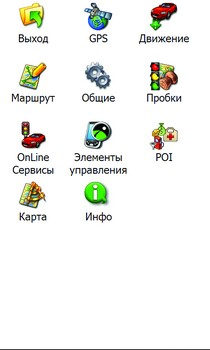 | 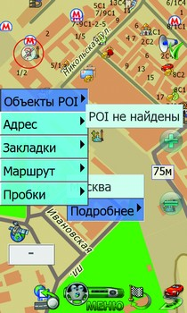 |
;){kind=link}
Особенность интерфейса — всплывающее поверх карты меню. Как в Windows по нажатию правой кнопки мыши. Отсюда можно быстро выбрать адрес назначения, POI, включить показ пробок. Очень здравое решение, учитывая загроможденность меню программы.
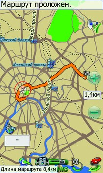 | 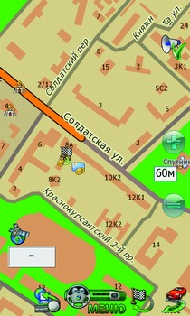 |
;){kind=link}
;){kind=link}
«Автоспутник» известен своей обширной базой POI. И ладно бы там больницы-рестораны, так программа знает и о постах ДПС, и о радарах, и о камерах, а иногда даже о лежачих полицейских! Можно включить отображение всей этой жизненно-важной информации на карте, и выглядеть это будет гораздо лучше, чем у «Навитела». Множество иконок POI не так сильно захламляют карту «Автоспутника», хоть и рисовали их левой задней.
НавигацияСторонники «Навител Навигатора» и «Автоспутника» давно воюют между собой, отстаивая честь и качество любимой программы. Но один аргумент сторонников «Автоспутника» приверженцы «Навитела» пока парировать не могут — качество роутинга. «Автоспутник» настолько грамотно прокладывает в маршруты, что в подметки ему не годится ни одна европейская программа. По личным наблюдениям, это действительно так — там, где TomTom или сомнительно предлагал «срезать» через дворы (дворы ли?), или гнал до дальних разворотов, «Автоспутник» прокладывал самый здравомысленный маршрут, не пытаясь скоротать путь через тихие, узкие и на практике почему-то забитые улочки. При проезде по городу программа старалась избегать ненужного прохождения развязок. Хотя однажды «Автоспутник» все-таки решил сэкономить 200-300 метров и погнал по второстепенным улицам, ведущим, в конце концов, на забитый съезд с Третьего кольца возле Рубцовской набережной. Грех жаловаться, «Яндекс.Пробки» в навигаторе были отключены. Хотя не факт, что помогло бы: во время нашего сравнения пробок от «Навител» и «Яндекса», вторые оказались в пролете.
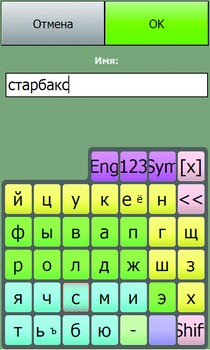 | 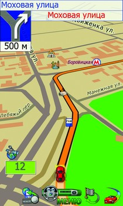 |
;){kind=link}
;){kind=link}
Отдельно хочется похвалить голосовые подсказки. Если остальные программы посреди жуткой развязки просто предлагают сделать поворот (а уж какой — глядите в карту), то «Автоспутник» заботливо предупреждает: «второй поворот направо».
Отдельное спасибо за поддержку корпусов и строений! Этим сакральным знанием обладают только истинно русские навигаторы — тот же TomTom не понимает, как на шоссе Энтузиастов у дома 56 может быть полсотни строений, из которых только в тридцать втором сидит редакция Mobi.
Плюсы- Толковый роутинг
- Показ постов, камер и лежачих полицейских
- Поддержка «Яндекс.Пробок»
- Сервис «Автоспутник Online»
- Жуткий интерфейс
- Карты только крупных городов
- Москва, Питер и трасса Е-95
iGO
Когда-то iGO был самой популярной в России навигационной программой. Во многом этой популярности поспособствовали навигаторы Mio, на которые этот самый iGO и был установлен. В начале этого года Mio сменили «дилера», тем самым подставив и себя, и iGO — оба резко потеряли популярность. Меж тем последняя версия iGO 8 забыта у нас незаслуженно. Базируясь на тех же картах Tele Atlas, что и большинство других навигаторов, iGO является компромиссом между TomTom, где в комплекте с программой автоматически получаешь дорогущий навигатор с отечественным софтом, который, как известно, бессмысленный и беспощадный.
Главной фишкой восьмой версии разработчики считают появление на карте трехмерных зданий с реалистичными текстурами. Не спорим, очень круто. Для Европы. А в России трехмерным в iGO показаны разве что Кремль, да Покровский собор. Но если попадете с iGO в какую-нибудь европейскую столицу — приятно удивитесь, узнавая проезжаемые здания на экране навигатора.
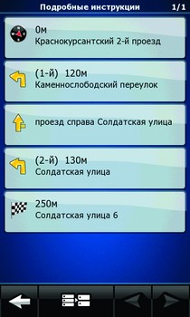 | 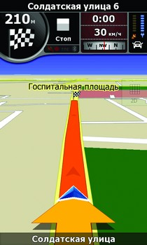 |
;){kind=link}
;){kind=link}
Поскольку для российских реалий никто программу не адаптировал, поддержки показа пробок в iGO нет. Точнее, есть разъем для модуля TMC, который у нас бесполезен. Да-да, в Европе информацию о заторах передают на FM-частоте, которую и принимает антенна TMC, посылая данные в навигатор.
Если присмотреться, то ничего особенного в iGO нет. Сейчас это совершенно средненькая программа с хорошим интерфейсом и сносными картами, без особенностей, без фирменных изюминок. Во многом поэтому iGO начал терять популярность на фоне русского GPS-софта.
ИнтерфейсУ европейцев определенно есть вкус. Такого мнения начинаешь придерживаться, изучая интерфейс iGO 8. Он сильно отличается от оного в предыдущей версии 2006 года, и отличается в лучшую сторону. Очень приятные цвета, большие кнопки, красивые иконки. Перемещаться по меню легко и просто, нет никакого нагромождения непонятных пунктов. Самое смешное, иконки порой куда более понятны, чем подписи к ним. Русификация вообще не пошла на пользу iGO — глаз режут непонятные сокращения и страшное ужимание шрифта с целью вместить длинную надпись в маленькую кнопку. Впрочем, ввиду немногочисленности этих самых кнопочек и пунктов, русский язык в версии iGO не сильно огорчает.
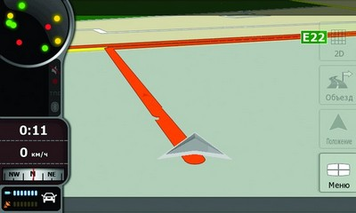 |
;){kind=link}
Интерфейс карты в режиме движения элегантен и очень информативен. На отдельной панели показана текущая скорость, направление ближайшего поворота (или карта принимаемых спутников), расстояние и время, компас, индикатор зарядки и название улицы, по которой вы едите. Указан даже масштаб в картографическом стиле. Не залезая в меню, можно быстро переключаться между 2D- и 3D-режимами показа карты. Одним нажатием вызывается быстрое меню, откуда можно подрегулировать громкость, начать запись проходимого пути или переключиться в ночной цветовой режим.
База POI в iGO 8 куцая и довольно-таки старая — если обновления карт выходят раз в полугодие, то обновления POI видят свет и того реже. Зато значки POI в iGO ненавязчивые, совершенно не захламляющие и без того очень чистую, аккуратную карту.
В программу вшиты очень неплохие статистические инструменты. Например, для намеченного пути iGO покажет расстояние, примерное время в пути, название всех проезжаемых улиц и описание выполняемых маневров. Если же вы просто путешествуете без определенной цели, программа будет запоминать пройденное расстояние, улицы и пики скорости.
НавигацияВенгерский iGO явно хочет быть похожим на американский TomTom во всем. Интерфейс версии для автонавигаторов напоминает «томтомовский», а прокладка маршрутов по картам Tele Atlas и вовсе неотличима от прокладки силами TomTom. Со всеми вытекающими — если не всегда толковый алгоритм TomTom сглаживается пользовательскими рекомендациями из MapShare, то iGO честно рисует линии напропалую, заставляя неподготовленных водителей шпарить по самым крупным шоссе и улицам. Не сказать, что iGO плохо прокладывает маршрут. Скорее бесхитростно, в лоб, без поиска оптимальных решений.
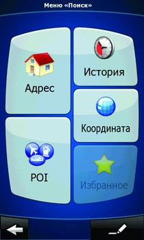 | 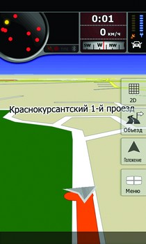 |
;){kind=link}
;){kind=link}
Ведет по маршруту iGO сносно, размер карты динамически изменяется в зависимости от скорости. И в зависимости от скорости же меняется громкость голосовых подсказок — на случай, если ваш автомобиль на скорости около сотни начинает рычать, аки издыхающий тракторный дизель. Конечно, эту малополезную для хороших авто функцию можно отключить.
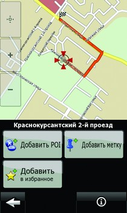 |
;){kind=link}
Приятно удивляет скорость работы программы — так же быстро, как и TomTom, причем и на автонавигаторах, и на коммуникаторах. В разы быстрей, чем «Навител». Видимо, не только дизайнерами славится Европа...
Но опечалило покрытие карт. То, что по факту называется «iGO Россия» и продается за добрую сотню баксов, на деле оказывается атласом крупных городов и федеральных трасс. Ничего не поделаешь, Tele Atlas.
Плюсы- Приятный интерфейс
- Хорошая скорость работы
- Нет поддержки пробок
- Карты только крупных городов
- Редкие обновления карт
- Дешевая замена TomTom
От казуалов казуалам. Самая «кавайная» навигационная программа из представленных в России. Sygic пришел к нам всего пару лет назад, но до сих пор известен лишь в узких кругах. И вот почему — хоть программа полностью кроссплатформенна (включая Linux и Blackberry), автонавигаторов с Sygic Drive у нас так и не появлялось. Поэтому программа продается лишь в версиях для коммуникаторов и смартфонов, а с недавнего времени появилась и в AppStore для iPhone под ничего не говорящим именем iДА. Sygic — продукт европейский, выполненный с европейской легкостью и картами Tele Atlas. Однако карты для русской версии адаптирует дистрибьютор «Вобис» — в результате «допиливания» русские карты несовместимы с зарубежными версиями программы, и наоборот.
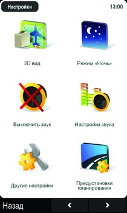 | 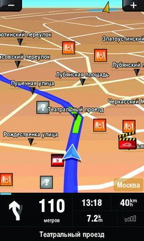 |
;){kind=link}
;){kind=link}
С точки зрения функциональности Sygic сливает всем программам из этого теста. В нем нет ни функции редактуры карт, ни оповещения о пробках, ни сверхточных карт, ни интернет-сервисов. Еще более заурядный, чем iGO, Sygic относится к программам казуальной философии, к стилю Apple, где все просто, где вместо кучи регуляторов есть одна кнопка, и где немногочисленные функции работают как часы.
Во время путешествий по Европе наш главный редактор использует как раз Sygic Drive, и, судя по отзывам (а его мнение вполне компетентно), эта программа замечательна для простой, городской навигации. То есть для путешествий из аэропорта в отель, из отеля до выставки, с выставки в ресторан, из ресторана к набережной. Замечательно для Европы, замечательно для Москвы, и даже приемлемо для междугородних поездок. В русской версии Sygic заявлен адресный поиск по сотне городов России — куда лучший результат, чем у TomTom. Если бы не старания «Вобиса», то Sygic не скоро бы стал «в доску» своим.
ИнтерфейсУпомянутый Apple-стиль действительно прослеживается во всем интерфейсе. Скругленные окошки, не всегда понятные, но красивейшие иконки, море белого цвета и аккуратные шрифты. Лучше всего программа смотрится именно на iPhone. Пунктов в меню и в настройках мало, назначение всех понятно и без мануала (который, к слову, встроен прямо в программу).
Если присмотреться опытным глазом, то оказывается, что интерфейс и структура меню содраны у TomTom чуть менее, чем полностью. Впрочем, нам какое дело? Лишь бы удобно было пользоваться. А пользоваться Sygic действительно удобно — программа проходит «блондинистый» тест как минимум потому, что нажать что-то не то и попасть куда-то не туда попросту невозможно. Почти все иконки так или иначе выводят к навигации. Оставшиеся четыре открывают калькулятор, мировое время, конвертер единиц (валюта, масса, длины) и справочник о странах. В последнем нет никакой стратегически важной информации, только население, валюта, телефонный код да часовой пояс.
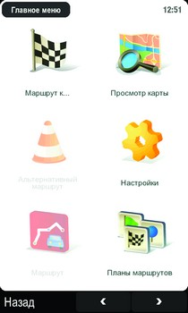 | 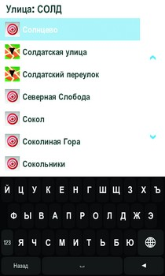 |
;){kind=link}
;){kind=link}
Во время движения Sygic, так же как и TomTom, на той же самой панели показывает расстояние и направление ближайшего маневра, скорость, время в пути и проезжаемую улицу. Интерфейс карты вообще сделан аккуратно и ничуть не мешает движению. Да и сама карта очень чистая, с небольшими иконками POI и очертаниями домов (в официальных картах от «Вобиса»).
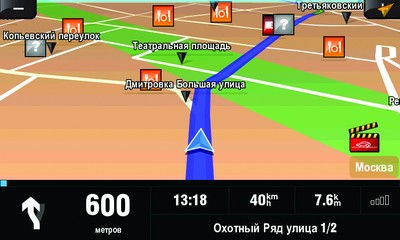 |
;){kind=link}
Пока что никаких «пробкосервисов» в Sygic нет, но «Вобис» обещал внедрить их к концу этого — началу следующего года.
НавигацияСначала Sygic очень трудно представить в автомобиле. Немногие используют коммуникаторы и тем более iPhone в качестве автонавигатора. Может, это и к лучшему — и по наблюдениям, и по отзывам пользователей, маршруты по Москве Sygic прокладывает исключительно странные. Если нужно проехать пять-семь километров, Sygic едва ли напортачит с дорогой. Захотите доехать на другой конец города — рискуете постоять в пробках на центральных улицах и «посрезать» лишнюю сотню метров через второстепенные улочки и дворы. Программе невдомек, что совершить несколько поворотов в крупном городе гораздо трудней, чем проехать лишний километр. Может выручить ручное планирование маршрута через конкретные точки, но лишь тогда, когда вы знаете, как оптимизировать дорогу. Но если знаете, то и смысла в навигаторе не остается, верно?
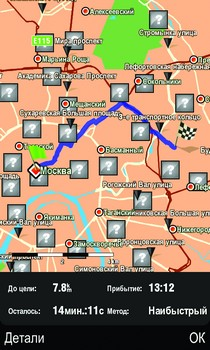 |
;){kind=link}
В целом во время движения Sygic ведет себя ровно как TomTom. То есть без закидонов, тормозов и нелогичного масштабирования. Единственный нюанс — в версии для iPhone нет голосовых подсказок. Впрочем, странных людей, использующих iPhone в качестве автонавигатора, в нашей стране критически мало.
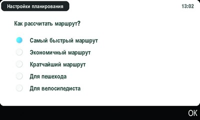 |
;){kind=link}
База POI в Sygic не ахти, а редкий формат файлов с POI делает невозможным их обновление через публичные источники, вроде poi.gps-club.ru. Зато если включить предупреждение о приближении к интересующим объектам, навигатор будет голосом сообщать о POI на вашем пути и высветит иконку с расстоянием до точки.
Плюсы- Простой интерфейс
- Хорошая скорость работы
- Кроссплатформенность
- Сомнительный роутинг
- Слабая база POI
- Пешком по Европе